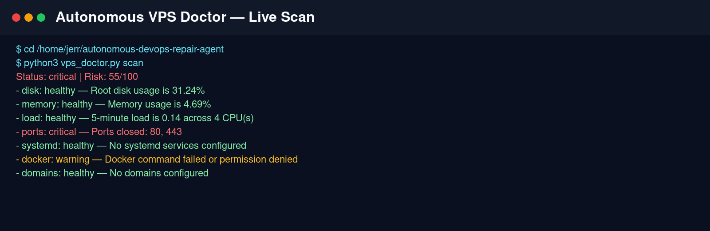
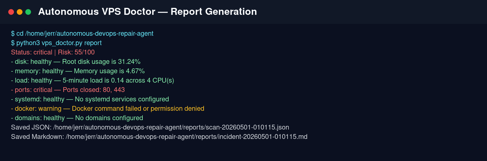
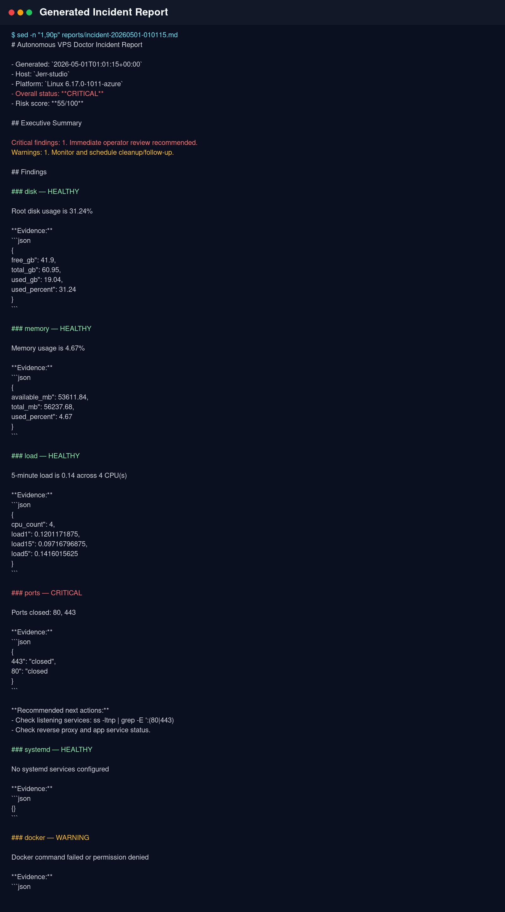
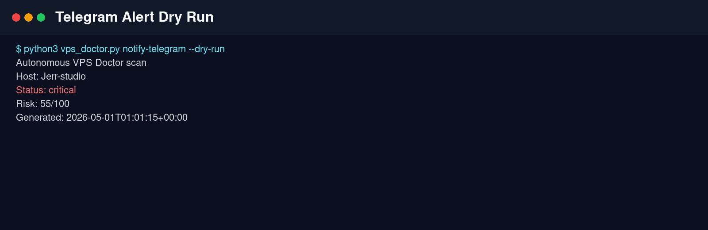

⚙️ Agentic DevOps Proof Project
Autonomous DevOps Repair Agent
A safe-by-default AI operations agent for production Linux servers. It scans VPS health, diagnoses likely incidents, generates structured reports, and prepares recovery plans for human approval.
7server health checks
55/100live demo risk score
4proof artifacts generated
What it does
- Checks disk usage, memory pressure, CPU load, ports, systemd, Docker, and DNS.
- Classifies results as healthy, warning, or critical.
- Generates Markdown and JSON incident reports.
- Creates Telegram alert messages for incident notification.
- Keeps production safe: no destructive cleanup or restarts without operator approval.
Live scan summary
Status: critical | Risk: 55/100
- disk: healthy — Root disk usage is 31.24%
- memory: healthy — Memory usage is 4.68%
- load: healthy — 5-minute load is 0.14 across 4 CPU(s)
- ports: critical — Ports closed: 80, 443
- systemd: healthy — No systemd services configured
- docker: warning — Docker command failed or permission denied
- domains: healthy — No domains configured
Agent workflow
1. Diagnose
Collect evidence from terminal commands and server state.
2. Reason
Classify risks, identify likely root causes, and prepare safe fixes.
3. Report
Generate incident reports, proof artifacts, and operator handoff.
Proof screenshots




Run locally
cd /home/jerr/autonomous-devops-repair-agent python3 vps_doctor.py scan python3 vps_doctor.py report python3 vps_doctor.py notify-telegram --dry-run